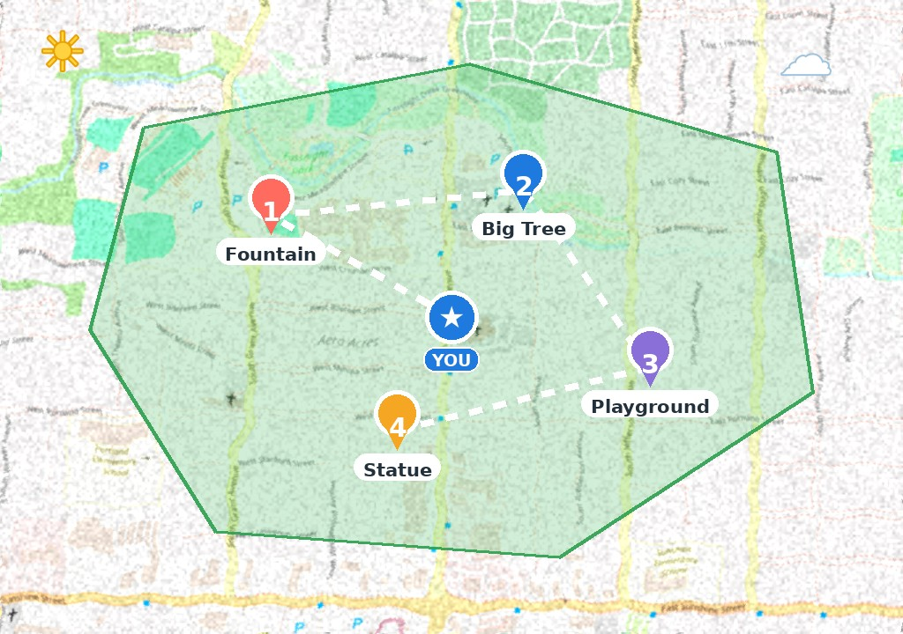
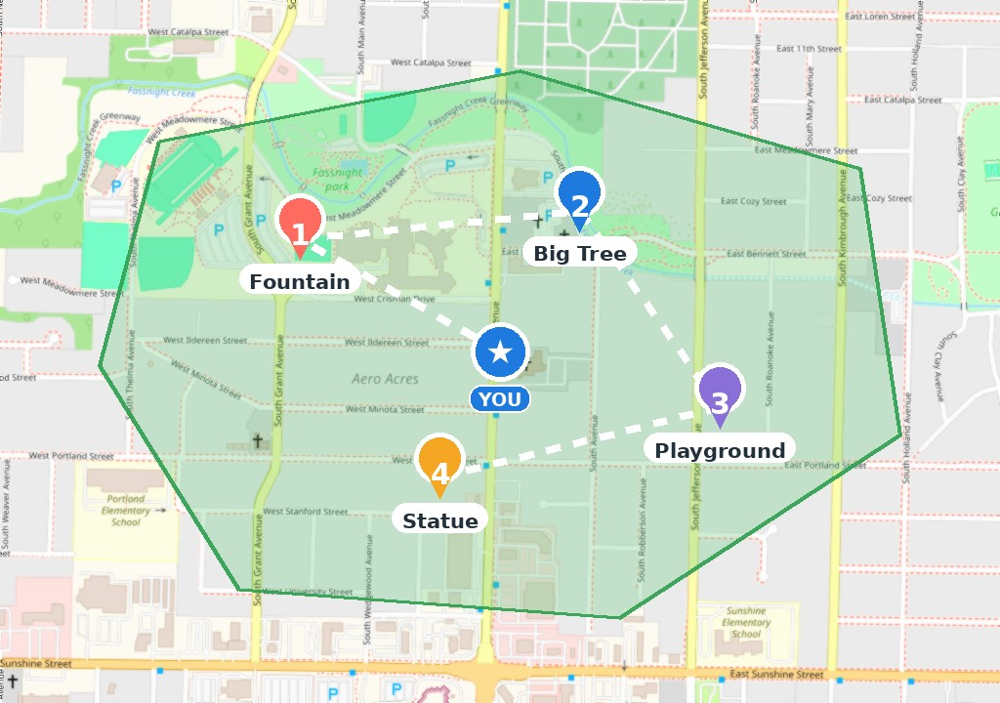
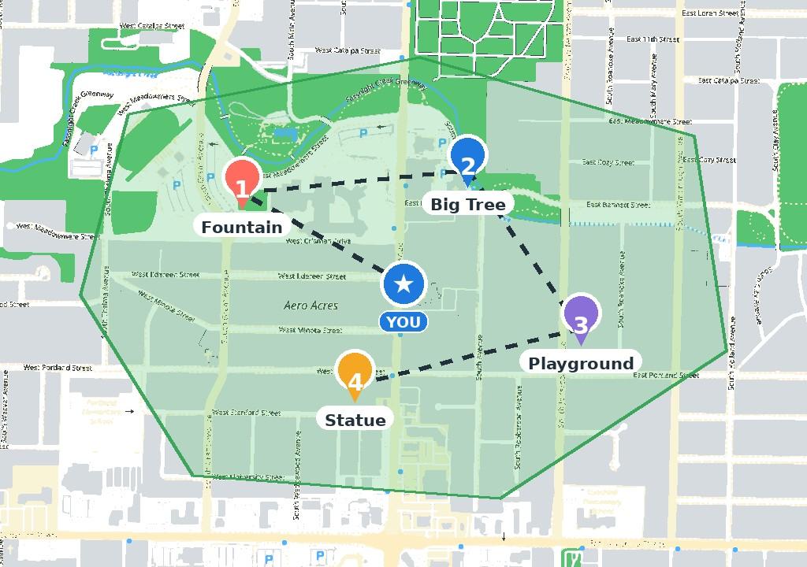

The real street map stays crisp and readable — every street name in place — and the game is drawn on it in crayon: a red crayon dashed route and crayon circles around each hunting spot, with a light waxy grain over the paper.
The real street map stays crisp and readable — every street name in place — and the game is drawn on it in crayon: a red crayon dashed route and crayon circles around each hunting spot, with a light waxy grain over the paper.

The whole map drawn in crayon: waxy texture, wobbly hand-drawn roads, soft crayon colors, a doodled sun and cloud. Streets are still the real Springfield streets and can still be read — it just looks like a kid drew the world.

Bright and saturated with the colors turned way up — the same pop treatment the game uses today, pushed brighter. Parks glow green, main roads glow gold, everything reads at a glance from the back seat.

Old parchment and sepia ink: a dashed trail winds between the hunting spots and a big red X waits at the last one. Real street names stay readable under the antique treatment.

Flat poster colors and big simple shapes: bold green parks, blue water, cream blocks, streets as a clean white grid with ink labels. The simplest read of the five — nothing on it a little kid can't follow.